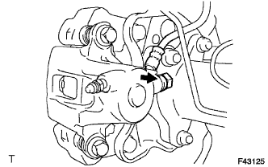
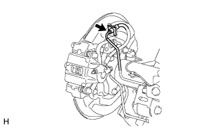
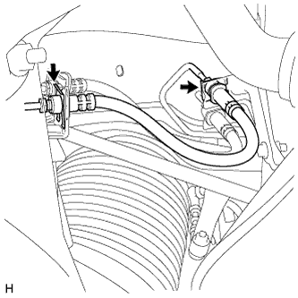
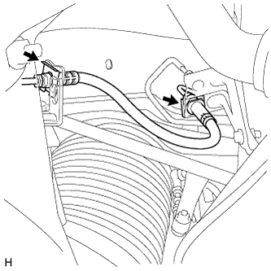
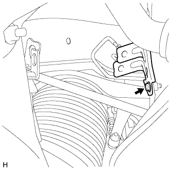
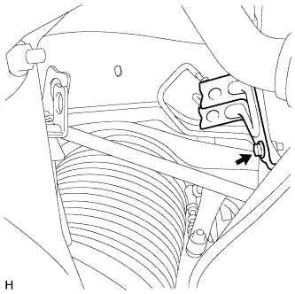

ГИБКИЙ ШЛАНГ ЗАДНЕГО ТОРМОЗА > СНЯТИЕ |
| 1. СНИМИТЕ ЗАДНЕЕ КОЛЕСО |
| 2. СЛЕЙТЕ ТОРМОЗНУЮ ЖИДКОСТЬ |
| 3. СНИМИТЕ ЛЕВЫЙ ЗАДНИЙ ГИБКИЙ ШЛАНГ |
|  |
Снимите пустотелый соединительный болт-штуцер, прокладку и задний гибкий шланг с колесного тормозного цилиндра заднего дискового тормоза.
|  |
С помощью разрезной головки отсоедините трубопровод тормозной системы от заднего гибкого шланга, удерживая задний гибкий шланг гаечным ключом.
Снимите фиксатор.
| 4. СНИМИТЕ ГИБКИЙ ШЛАНГ ЗАДНЕГО ТОРМОЗА |
|  |
С помощью разрезной головки отсоедините каждый трубопровод тормозной системы от заднего гибкого шланга, удерживая задний гибкий шланг гаечным ключом.
Снимите 2 фиксатора.
Снимите задний гибкий шланг.
|  |
С помощью разрезной головки отсоедините каждый трубопровод тормозной системы от заднего гибкого шланга, удерживая задний гибкий шланг гаечным ключом.
Снимите 2 фиксатора.
Снимите задний гибкий шланг.
| 5. СНИМИТЕ КРОНШТЕЙН ГИБКОГО ШЛАНГА № 5 |
Для 3-дверных моделей:
|  |
Выверните болт и снимите кронштейн с кронштейна верхнего рычага.
Для 5-дверных моделей:
|  |
Выверните болт и снимите кронштейн с кронштейна верхнего рычага.
| 6. СНИМИТЕ КРОНШТЕЙН ГИБКОГО ШЛАНГА № 6 |
Выверните болт и снимите кронштейн с кожуха задней полуоси.